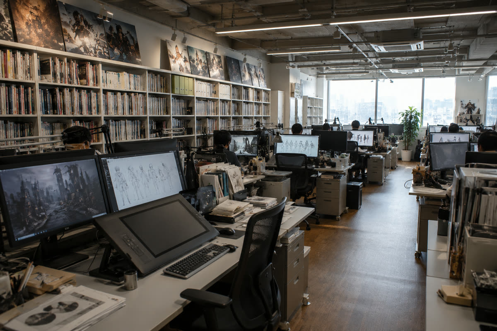

ABOUT
VISION
想像力に、命を吹き込む。
Aoki Animationは「すべての物語には、動き出す瞬間がある」という信念のもと、2018年に設立されたアニメーション制作スタジオです。原作の世界観を最大限に引き出し、視聴者の心に残る映像体験を届けること。それが私たちの使命です。作画・演出・撮影・音響、あらゆる工程にこだわり抜き、一つひとつのカットに魂を込めて制作しています。
FACTS
- 2018設立
- 120名スタッフ（2025年4月現在）
- 5作品制作タイトル
- 10億円劇場版 興行収入
STUDIO
STUDIO & ENVIRONMENT
TOKYO
STUDIO
スタジオ環境
広々とした作画フロア、最新のデジタル作画環境、充実した資料ライブラリ。クリエイターが最高のパフォーマンスを発揮できる環境づくりに力を入れています。
全席にWacom Cintiq Pro を導入し、CLIP STUDIO PAINTやTVPaint Animationなど、プロ仕様のソフトウェアを完備。快適な制作環境のなかで、クリエイターたちが日々作品づくりに取り組んでいます。

COMPANY PROFILE
- 社名
- 株式会社 Aoki Animation
- 設立
- 2018年4月
- 代表
- 青木 翔太
- 所在地
- 東京都杉並区西荻北3-12-8 AOKIビル 4F
- 従業員数
- 約120名（2025年4月現在）
- 事業内容
- アニメーションの企画・制作、キャラクターデザイン、CG制作、映像編集
- 主要取引先
- 各放送局・出版社・製作委員会
HISTORY
- 2018
スタジオ設立。OVA「花咲くころに」企画開始。
- 2019
第1スタジオ稼働。スタッフ30名体制。
- 2020
初TVシリーズ受注。撮影・仕上げ内製化完了。
- 2022
第2スタジオ開設。3DCGセクション新設。80名体制。
- 2023
OVA「花咲くころに」公開。国内アワードノミネート。
- 2024
TV「星屑カルテット」「メカニクス・コード」放映。
- 2025
TV「蒼穹のリリィ」放映開始。劇場版「永遠のセレナーデ」公開。120名体制。